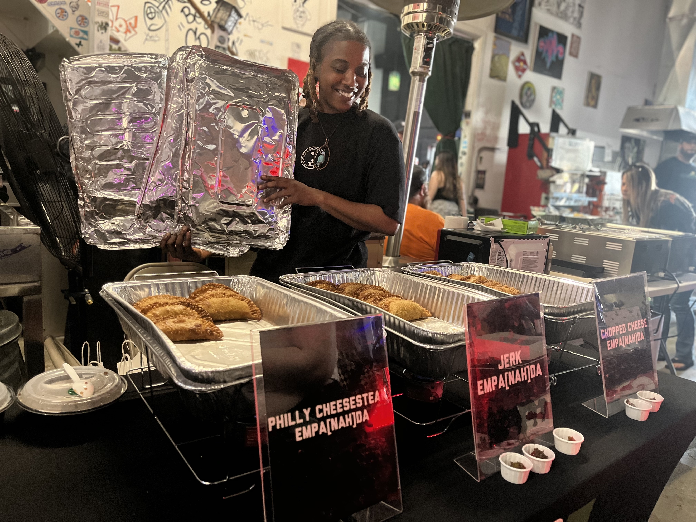

Veganism in the Black Community
an audio documentary about the fastest growing demographic in the vegan community in America.
Veganism in the Black community is increasing in America as many of them are becoming more health-conscious due to books, documentaries, and influencers that talk about the impact of the Black diet. Kiya Huffman, the owner of Empa[NAH]das and host of the Youtube Channel Vegan and Ventures, discusses her veganism journey through and the start of her vegan empanada business.

Transcription
[[Kiya Youtube video audio]]
Kiya Huffman:It smells like a piece of heaven. Alright. Literally, if heaven came down and sat right on my porch, that’s what it would smell like. You ready? Ya’ll ready? Let’s get it!
Kiara Thomas: That’s Kiya Huffman, the brains behind the Youtube channel Vegan and Ventures and owner of vegan empanada business Empa[NAH]das. She’s reviewing the vegan mushroom truffle omelet from Smile of The Beyond in Jamaica, Queens.
[[Kiya Youtube video audio]]
Kiya Huffman: This is their best seller. Ya’ll, this damn thing tastes good as hell!
Kiara Thomas: She started the channel in 2019 with her friend Josh McKenzie.
Kiya Huffman: We used to go to so many vegan restaurants. I was like, I'm gonna start taking pictures of you in front of all of the vegan spots we go to, because he was a photographer too. And I was like, I'm a just put it in like a vegan book and so we can remember everywhere we went. And like literally like a few days later, I'm like, Why? Why would we just do that? Why not just go in there and review the food? Like, because that's what we was doing. We was going in there, sitting there talking to each other about the food and all that stuff. I'm like, Why don't I record? Like it, this is like good stuff.
Kiara Thomas: On Youtube you can find videos of them tasting vegan food in Barcelona and London, doing a vegan hot wing challenge, and making vegan chicken using flour and water. When Josh went off to college, Kiya continued her vegan adventures including guests like her mom, to her videos.
Kiya attempted to be vegan twice. The first time was in twelfth grade more than 10 years ago. She had a teacher named Mr. Nelson for first period. He was vegan. He showed Kiya and her class videos of how animals are killed and their meat packaged for supermarkets.
Kiya Huffman: From that first period, I stopped eating meat because I was like, Yo, I cannot be a part of this. It was harder for me then not to eat my family's food because I literally just did it cold turkey. Like I honestly and truly didn't even know what it was I was doing. I just knew that my body was telling me, you do not want to be a part of this? Like you can't do it. And like my family didn't even understand because we ain't know, you know, we didn't know what it was. Like we didn't know not to eat meat. That’s all we kind of grew up on type things
Kiara Thomas: Kiya grew up with her mom and Nana cooking collard greens, cornbread, fried chicken and sweet potato pie on Long Island. She found it difficult to stay away from their cooking, especially her childhood favorites.
Kiya Huffman: It was extremely, extremely hard for me. But that's I would just eat things like that. Like I would just eat like, you know, the rice and or the vegetables and all that stuff. And I ended up eating meat again because my mom was just like, ‘All right, Kiya, I don't know what you want me to do. Like, you know, like, you need some food. You losing mad weight.’ So then I just ended up in meat again after that.
Kiara Thomas: Kiya’s second attempt started in 2017 when her cousin cut out meat. After being vegan for a few months all those years ago and the rising popularity of veganism in the media, she decided to give it a go.
Kiya Huffman: Beyond Burger was coming out, you know, all that stuff. Like White Castle always had like vegan things there too. So around that time it was actually kind of – this time it was easier for me to not eat the meaty parts of my family's cooking.
Kiara Thomas: She was first pescatarian before fully transitioning to be vegan in January 2022 at 29 years old. She is one of the many Black Americans, who are deciding to be vegan. A 2016 Pew Research Center surveyfound that eight percent of Black Americans followed a strict vegan or vegetarian diet compared to the three percent of overall Americans.
Within the last couple of decades, books and films, like What The Health and The Omnivore’s Dilemma, and influencers like YouTuber Tabitha Brown brought healthy eating into the mainstream. And during the pandemic a lot of people started thinking more about their health. A 2021 IPSOS survey found that 62 percent of Americans said that their health was more important to them now than before the pandemic. Victoria Moran is a certified holistic health counselor and vegan lifestyle coach. She says this is partly linked to people becoming more aware of how chronic conditions can make COVID more serious.
Victoria Moran: I think that a lot of people who were in for the pandemic were doing a lot of research on what can I do not to get this? And we did see with the pandemic that preexisting conditions were really problematic. Obesity, type 2 diabetes, asthma, some of these kinds of things were very difficult when people did contract COVID.
Kiara Thomas: Many people were also looking at plant-based meat alternatives during this time. A 2021 survey from the International Food Information Council said that most Americans ate plant-based meat alternatives in the past year.
Kiya Huffman: I personally feel nobody can sit here and tell me that they never had like one vegan food item. Like it's literally everywhere. It’s at fast food restaurants that most people be going to, you know. A lot of black owned vegan businesses are starting to, you know, become like a big thing. Like it's just too easy for people not to have it now. And it's it's more out there than it was before.
Kiara Thomas: The state of health in America hasn’t been the best, but specifically Black Americans have the highest rates of many chronic diseases. This includes high blood pressure and obesity. In 2020, the CDC said the leading cause of death for Black people were heart disease, cancer, and COVID-19.
When Kiya was transitioning, her mom told her it was good that she was on the track to become vegan because chronic diseases ran in her family.
Kiya Huffman: My mom had told me she had diabetes and like all the stuff that was going on, like, it just – it kind of just made me want to stick to it more. Like I was going with her to some of her like doctor appointments. And I would ask them like, you know, is not eating meat, is that like will that be like somewhat beneficial? And, you know, they would like explain like, yeah, you know, that actually that is kind of, you know, like a better route to go.
Kiara Thomas: Studies have shown that diet, stress, and genetics are connected to a person being diagnosed with a chronic disease. Researchers in a 2022 study published in BMC Medicine examined almost 500,000 people from the UK over a 10 year period. They found that people who ate less meat or none at all lowered their risk of getting certain cancers. Researchers said that some cancers, like colorectal cancer, could be linked to diet. Many previous studies have come to the same conclusion.
With Black Americans having access to more processed foods, less healthy options, inadequate healthcare, and experiencing stress from structural racism, it isn’t a surprise that the state of Black health is suffering when compared to other races. Adrian Miller is a chef, author, and food historian. He says that the state of Black health is more than a food issue.
Adrian Miller: We've got cheap meat, we've got cheap calories and people are not having a balanced diet that is balanced with more fruit and vegetables and other things. So that's the food side of the story. But I think one part of the story that gets overlooked is the sustained exposure to racism environmentally and in other ways, and that definitely has health outcomes. And I think there's more and more appreciation for that, leading to things like high blood pressure and other things, you know, the constant stress brought about by external factors.
Kiara Thomas: Meat has become the center of food in America, but it hasn’t always been like that, especially for people of African-descent. Adrian says the diet of people in the African diaspora changed greatly from life before colonialism and slavery and afterwards.
Adrian Miller: When looking at West African kind of diets, most of it is very plant based and it's really starches that root the meal. So in parts of West Africa, there's an indigenous rice culture. And so a lot of meals were based on that. There are other places where it was based on things like sorghum and millet, black-eyed peas. And then you've got other parts where the root crops form the basis of the diet, so yams, plantains and cassava. And then later, after European contact and colonization, other plants from around the world start getting introduced. You've got cornmeal, you've got sweet potatoes and other things. And so but still, the diet was pretty much plant-based with protein as part of it, and usually especially in the coastal areas heavy reliance on seafood and then as you move to interior things like bushmeat and other things.
Kiara Thomas: When Africans were enslaved, their diets were sort of replicated. On a plantation, enslaved people ate five pounds of a starch, which could be cornmeal, rice, or sweet potatoes. They also had a couple pounds of meat, which was usually smoked, dried or pickled. Usually this was pork. And then a jug of molasses. In addition to what their slaveholders gave them, enslaved people also foraged, hunted, gardened and fished for food – some of which they had to do in secret. Their diet was overall …
Adrian Miller: ...really plant based and meat was a luxury. And you know, this kind of follows the trajectory of American society. You see that for most of our country's history, people were eating a lot of plants and then as they aspire to, you know, class status and wealth, you get more and more meat entering the diet. To the point now where for a lot of people, the diet is very meat centric, even if they aren't necessarily, you know, prospering. Meat has become very cheap and available in the United States. So it's almost a complete movement away from the diet of West African ancestors to be something that's so meat centric. And that's the change that was brought on partly because of enslavement, also because in a new context, African-Americans, much like other Americans, were seeking class status and often meat consumption was a reflection of that.
[[pan sizzling]]
Kiara Thomas: Kiya wasn’t much of a chef during her veganism journey, yet she finds herself in the kitchen more these days as the owner of Empa[Nah]das. She makes plant-based empanadas inspired by cultural foods, like jerk chicken and barbecue pulled pork.
Kiya Huffman: I see all my vegan food as all right, if I was trying to transition this person over, how like how realistic does it have to taste for them to be like, I can, I can stop eating meat. I can stop being a part of that process. You know, that kills animals and do this. That's how I see it. And I be try–, I season it to the T.
Kiara Thomas: On a Friday afternoon, at a Bar Go Juice in Queens, Kiya holds a pop up shop. This is just the start of her busy weekend where she has events back-to-back. She talks to the people as they choose their empanadas and watches their reactions. Among the patrons is Peggy Luque, a Cuba-American vegetarian. She buys over a dozen empanadas. She says that finding Kiya and her vegan empanadas brings back memories of her childhood when her aunt would bring her family meat-filled empanadas from Jersey City.
Peggy Luque: It's tough being an Afro-Latina, man. We all eat meat and roast pork and you know, every day is something – arroz con pollo and pernil and I'm like [[sniffs]] but no I'm not I'm not tempted. I'm not tempted. It's all good. I'm in a happy place right now. And finding Kiya and her vegan empanadas is like, it's amazing as I miss them so much.
Kiara Thomas: Most of Kiya’s customers aren’t plant-based like Peggy, but they do resonate with some of her Caribbean and Southern empanada flavors. Kiya loves events like this, where she can go into a neighborhood and connect with the residents there. She surprises some of them with how flavorful plant-based foods can be. She shows them that people don't need to sacrifice their taste buds for healthier food. I see one of Kiya’s customers eating the jerk empanada. I ask him if he ever had a vegan empanada before. He said…
Customer 1: Nah this vegan? Nah it ain’t vegan. Yo this vegan?!
Peggy Luque: It’s vegan!
Customer 2: Yes!
Customer 1: Nah, You fucked me up!
Peggy Luque: Ahhhhh!
Kiya Huffman: Look at it right here.
Kiara Thomas: See?
Kiya Huffman: What that say?
Customer 1: She hit me up like –
Kiya Huffman: The empanadas that make you say nah these can’t be vegan.
Customer 1: I’m like yo you’re on the wrong interview, ma. This shit is vegan?! Okay!
Kiara Thomas: I ask Kiya how she feels about the reactions she gets when people find out that her empanadas are vegan.
Kiya Huffman: I love those reactions like I like to watch people just just – it's like I have to see it.
Article
“I always knew there was racism in the vegan community because I remember seeing somebody post something about a Black person that had abused an animal,” Gwenna Hunter said. “And I never saw the word, the N-word, so much since being in the community and this was years ago, but it was just like, the comments were so horrible. And I'm like, how could the same people care about animals?”
Even though Black people are the fastest growing demographic for veganism, according to a Pew Research Center survey, they often feel excluded from vegan culture. It might seem like people who are concerned about oppression of and cruelty toward animals would be a relatively sensitive and open community, but some Black vegans have experienced exclusion, disrespect and outright racism in the vegan community.
Hunter, a ______ in Los Angeles, started the Facebook group Vegans for Black Lives Matter in 2020, after the murder of George Floyd, to merge social justice with veganism. The group now has almost 5,000 members and has hosted many conversations that have helped articulate the many connections between animal rights and human rights.
Hunter is part of a long line of African Americans who see the connection between civil rights and animal rights. Her Facebook group is the modern incarnation of discussions that were happening in the 1960s among civil rights activists. In particular, Dick Gregory was vegetarian and directly articulated the connections between racial justice and animal rights. He said that if he’s fighting oppression and nonviolence, it should encompass animals as well. This led other civil rights activists, like Dexter Scott King and Coretta Scott King, to become vegan as their next step to living a nonviolent lifestyle.
Gregory’s messages also consisted of educating Black people about eating healthier. Dr. Alvenia Fulton, a Black woman who opened the first healthy food store in the South Side of Chicago in tk year, influenced Gregory. Historically, Black Americans have the highest rates of many chronic diseases, like high blood pressure, diabetes, obesity and cancer. These chronic diseases are rooted in diet, exercise, stress and genetics. Activists such as WHO? Are increasingly connecting the dots between ill health in the African American community and poor nutrition that stems from structural issues such as living in food deserts and the ubiquity of low-cost junk food. Some Black people advocated [can you name a key person in this movement? Maybe mention Miller here?] the idea of “decolonizing” their plates of of processed foods and meats by eating a plant-based diet, which is closer to the diet of West Africans prior to slavery.
“You've got all of these things kind of interestingly happening in the South during the times of the civil rights movement and definitely there were some seeds sown then and they flourished today,” said food historian Adrian Miller.
In many ways the Black Lives Matter movement is the successor to the civil rights movement of the sixties. And at the same time, veganism has been growing fast among Blacks in the United States. [here add that 8 percent stat]
Hunter started to transition to become vegan after a dream she had in February 2016.
“I had a dream that I was flying in the sky,” Hunter said. “I saw this beautiful cow and a green pasture. The cow looked up at me and when I looked at her, our eyes merged, and we became one. I was the cow and I possessed all the cow’s consciousness.”
She woke up crying. She felt like cows had a higher consciousness than humans and yet they were being slaughtered and used for consumption.
Years later, at the height of the Black Lives Matter movement, the name Vegans for Black Lives Matter came to her. Maybe add a sentence to set up the quote, that she was somewhat reluctant to act on it because she knew this would be a difficult path but she also felt it was a calling?
“I really did not want a group because when you create groups, you have to really nurture them, you got to communicate with people, and you got to manage who's coming in and the conversations,” Hunter said. “That was not my goal. But it was like a divine thought.”
She created the group but didn’t post anything for a couple of weeks. She invited five people she knew and the next day it grew to 500 people. The group was growing by hundreds each day. And it wasn’t all good.
Cara West, a member of the Facebook group said that it’s been hard for her as a vegan to see how white vegan creators and animal rights activists handled the Black Lives Matter movement. She saw white vegans use the movement as a way to divert the conversation to speak about animal rights instead of supporting the Black community. She believed that if the community was about advocating for cruelty of everyone that they would be on the front lines for racial justice.
“They could have really highlighted people of color within the vegan community, they could have really highlighted their voices during that time,” West said. “And that they didn’t really showed me that this is not about fighting all oppression. This is about fighting one part of oppression.”
The first year and a half the conversations were difficult to manage. People were angry. Hunter created rules?? to regulate the conversations and keep them from getting out of hand. She understood the anger and felt like people needed a place to vent as long as they weren’t disrespectful or hurting people.
Discussions touched on people’s experiences with systemic racism. Some white people in the group were just learning about past and ongoing racial injustices. They had no idea about the extent of police brutality leveled at African Americans around the country. Others thought it must be made up, couldn’t be true.
One topic of conversation was educating people about sundown towns, all-white neighborhoods where people of color were essentially put on notice that they would not be safe there after dark. Some white people in the group shared that they never had Black friends because of these kinds of exclusionary practices and laws.
“People were arguing – mostly white people arguing with each other,” Hunter said. “It was like a woke Olympics type of situation going on where it was like, ‘Oh, you're a racist b****.’ ‘Oh, you're a racist bitch.’ Calling each other out for their racism. It's like, all y'all are racist. First of all, let's clear that up.”
After hearing the experiences of people in the group along with the explosion of news reports about racist behavior not only by police officers but at hospitals, schools and workplaces, many in the Facebook group were shocked and overwhelmed. They had not realized how many horrendous acts against the Black community were happening every day. Some even left the group because they were crying and in deep depression, Hunter said.
Ultimately, Hunter says, the conversations were a healing journey for herself personally and for the group.
“I suppressed a lot of my own pain when it came to police brutality and racism,” Hunter said. “And so having the group and allowing myself to explore the news and watch the stories and read them allow me to express a lot of pent up anger that I had.”
[ can you characterize where the group stands today? What are the conversations like? Have any cool collaborations or initiatives or personal connections come out of it?]
…. Dream…started the group…some heated exchanges give a sense of what kinds of things people have disagreed about.
[quote from a white vegan in the group]
[ending quote about a reflection of the facebook group how she sees it going into the future.] Someone affected by the group